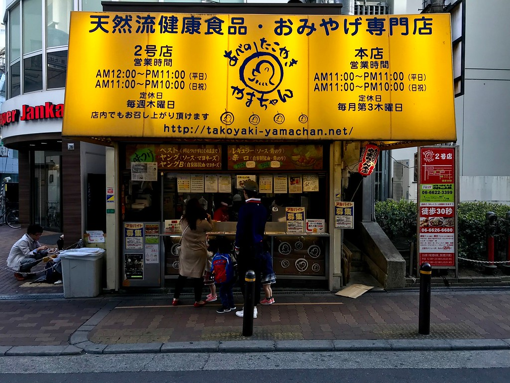
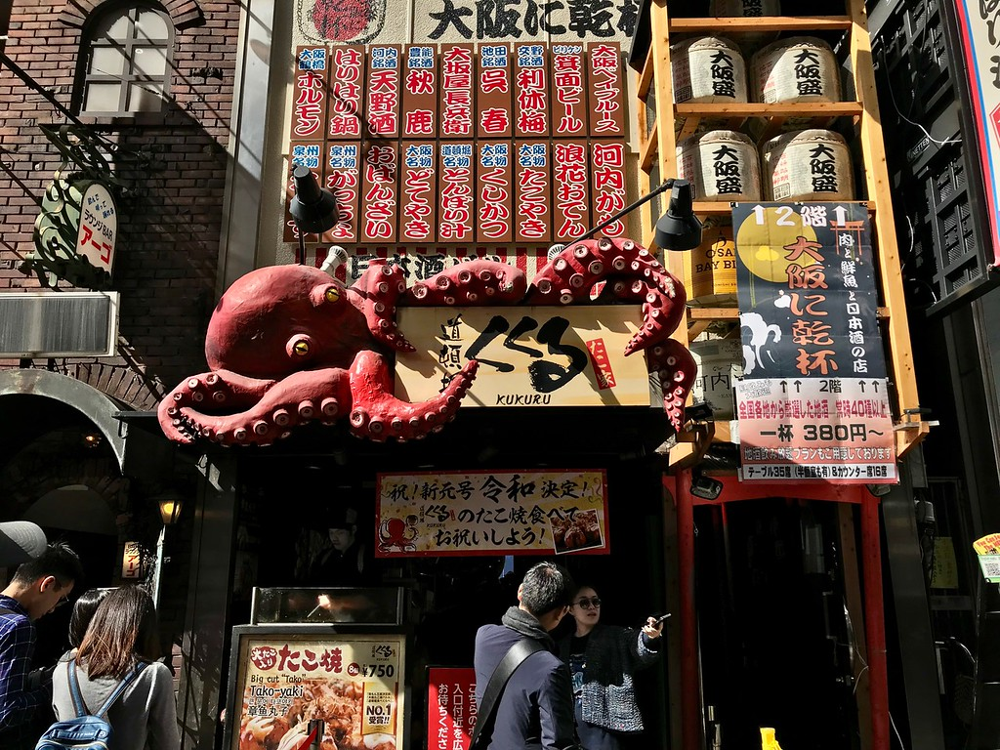
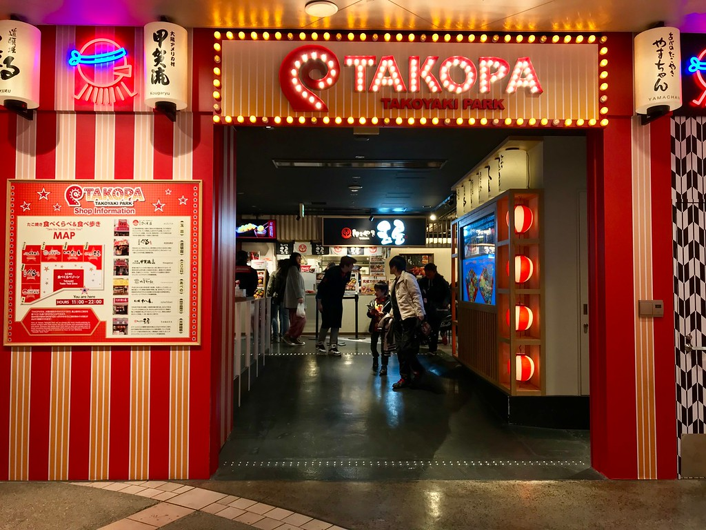

|
|
| |
Qui, ho scelto i migliori ristoranti disponibili a Osaka. Si trovano tutti nelle aree che probabilmente visiterai. I ristoranti elencati qui sotto sono posti dove puoi effettivamente andare e divertirti, la maggior parte senza alcuna prenotazione.
|  | ABENO TAKOYAKI YAMACHAN: sono famosi per le loro polpette di polpo |  |
TAKOYA DOTONBORI KUKURU: |
 | TAKOPA: per chi desidera un Takoyaki |
にっぽん の かんこ